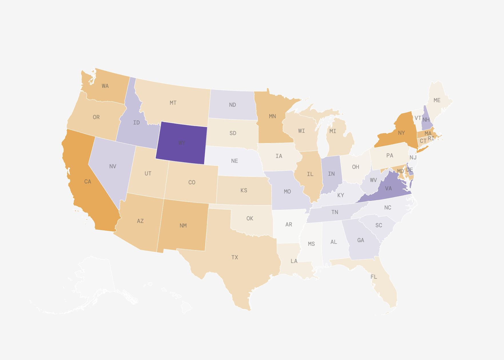

Amanda Fernandez
Hello, world! I'm a journalist learning to
<code/>
at the Columbia Journalism School.
I spend most of my time looking for interesting datasets and trying to make sense of the numbers. This is where I share my data projects and experiments as I learn along the way.

Up in Smoke: How Cigarette Taxes Drive a National Smuggling Market
D3.js
Python
Scrollama
Used Python and pandas to analyze state-level cigarette smuggling rates, finding that high-tax states drive massive black market inflows while low-tax states become accidental suppliers. Built a scrollytelling map, scatter plot, and diverging bar chart to show the geographic pattern.

Saffron Ties: India's Global Nationalist Network
Python
Datawrapper
ai2html
Adobe Illustrator
Used Python and pandas to map 108+ Hindu nationalist organizations across 17 U.S. states and 2,600+ globally, finding their transnational network operates through an interlocking web of charities, PACs, and lobbying groups.

Who's Behind the Wheel When Motor Crashes Happen?
Python
Datawrapper
ggplot
Used Python and pandas to analyze New York State crash data to examine gender disparities in motor vehicle accidents. Data visualizations with ggplot and Datawrapper.

Google Sheets
Tableau
Flourish
Analyzed vaccination and surveillance data to show how India's urgency in fighting polio has waned, even as the risk of resurgence quietly grows.

Google Sheets
Tableau
Flourish
Crunched enrollment data across thousands of colleges to uncover a quiet but steady rise of women entering the most male-dominated engineering disciplines.

Google Sheets
Tableau
Flourish
Used historical data on India's Olympic teams to show how two states have consistently punched far above their weight in producing the country's top athletes.

Autonomy, A++ Rating Fail to Mask the Crisis Facing Madras University — The Wire
Investigated financial and academic records to expose deep structural crises at one of India's oldest universities, hidden behind a prestigious accreditation rating.

Bikernis: Riding Beyond Boundaries — Star of Mysore
Profiled a community of women motorcyclists defying gender norms on the road, exploring what drives them and the barriers they navigate.

Gold in Gutters — Star of Mysore
Reported on a woman who earns her living sifting gold from the riverbed — part of a generations-old community of gold collectors who wade into the river daily, panning sediment by hand in hopes of finding traces of the precious metal.